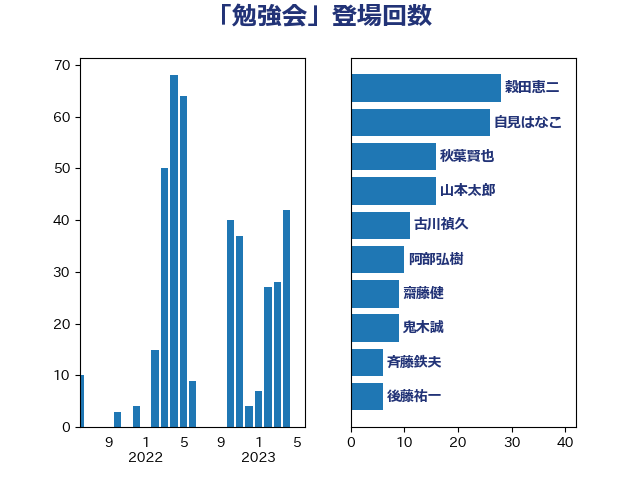

単語「勉強会」

| 自見はなこ | 自由民主党 | 34 回 |
| 穀田恵二 | 日本共産党 | 28 回 |
| 古川禎久 | 自由民主党 | 11 回 |
| 鬼木誠 | 立憲民主党 | 10 回 |
| 本田顕子 | 自由民主党 | 9 回 |
| 山田太郎 | 自由民主党 | 6 回 |
| 斉藤鉄夫 | 公明党 | 6 回 |
| 高木かおり | 日本維新の会 | 6 回 |
| 田村憲久 | 自由民主党 | 5 回 |
| 世耕弘成 | 自由民主党 | 4 回 |
| 加藤勝信 | 自由民主党 | 4 回 |
| 岬麻紀 | 日本維新の会 | 4 回 |
| 梅村聡 | 日本維新の会 | 4 回 |
| 牧原秀樹 | 自由民主党 | 4 回 |
| 萩生田光一 | 自由民主党 | 4 回 |
| 務台俊介 | 自由民主党 | 3 回 |
| 坂本哲志 | 自由民主党 | 3 回 |
| 松川るい | 自由民主党 | 3 回 |
| 長妻昭 | 立憲民主党 | 3 回 |
| 階猛 | 立憲民主党 | 3 回 |
| 上川陽子 | 自由民主党 | 2 回 |
| 下野六太 | 公明党 | 2 回 |
| 中島克仁 | 立憲民主党 | 2 回 |
| 串田誠一 | 日本維新の会 | 2 回 |
| 住吉寛紀 | 日本維新の会 | 2 回 |
| 古賀友一郎 | 自由民主党 | 2 回 |
| 吉田統彦 | 立憲民主党 | 2 回 |
| 大串博志 | 立憲民主党 | 2 回 |
| 岸信夫 | 自由民主党 | 2 回 |
| 川崎ひでと | 自由民主党 | 2 回 |
| 有村治子 | 自由民主党 | 2 回 |
| 末松信介 | 自由民主党 | 2 回 |
| 松本尚 | 自由民主党 | 2 回 |
| 梅谷守 | 立憲民主党 | 2 回 |
| 梶山弘志 | 自由民主党 | 2 回 |
| 浅野哲 | 国民民主党 | 2 回 |
| 片山さつき | 自由民主党 | 2 回 |
| 田村まみ | 国民民主党 | 2 回 |
| 鈴木貴子 | 自由民主党 | 2 回 |
| 音喜多駿 | 日本維新の会 | 2 回 |
| 高木啓 | 自由民主党 | 2 回 |
| ながえ孝子 | 無所属 | 1 回 |
| 一谷勇一郎 | 日本維新の会 | 1 回 |
| 三ッ林裕巳 | 自由民主党 | 1 回 |
| 上月良祐 | 自由民主党 | 1 回 |
| 中川宏昌 | 公明党 | 1 回 |
| 中川正春 | 立憲民主党 | 1 回 |
| 中村裕之 | 自由民主党 | 1 回 |
| 中西祐介 | 自由民主党 | 1 回 |
| 伴野豊 | 立憲民主党 | 1 回 |
| 佐藤啓 | 自由民主党 | 1 回 |
| 前川清成 | 日本維新の会 | 1 回 |
| 吉田はるみ | 立憲民主党 | 1 回 |
| 吉良よし子 | 日本共産党 | 1 回 |
| 和田政宗 | 自由民主党 | 1 回 |
| 大西健介 | 立憲民主党 | 1 回 |
| 太田房江 | 自由民主党 | 1 回 |
| 宮本徹 | 日本共産党 | 1 回 |
| 寺田静 | 無所属 | 1 回 |
| 小寺裕雄 | 自由民主党 | 1 回 |
| 小西洋之 | 立憲民主党 | 1 回 |
| 小野寺五典 | 自由民主党 | 1 回 |
| 山添拓 | 日本共産党 | 1 回 |
| 山田美樹 | 自由民主党 | 1 回 |
| 山田賢司 | 自由民主党 | 1 回 |
| 山谷えり子 | 自由民主党 | 1 回 |
| 岡本三成 | 公明党 | 1 回 |
| 岸田文雄 | 自由民主党 | 1 回 |
| 庄子賢一 | 公明党 | 1 回 |
| 後藤茂之 | 自由民主党 | 1 回 |
| 打越さく良 | 立憲民主党 | 1 回 |
| 杉尾秀哉 | 立憲民主党 | 1 回 |
| 松沢成文 | 日本維新の会 | 1 回 |
| 梅村みずほ | 日本維新の会 | 1 回 |
| 森山浩行 | 立憲民主党 | 1 回 |
| 橋本岳 | 自由民主党 | 1 回 |
| 武井俊輔 | 自由民主党 | 1 回 |
| 清水真人 | 自由民主党 | 1 回 |
| 渡辺博道 | 自由民主党 | 1 回 |
| 渡辺猛之 | 自由民主党 | 1 回 |
| 田名部匡代 | 立憲民主党 | 1 回 |
| 畦元将吾 | 自由民主党 | 1 回 |
| 矢倉克夫 | 公明党 | 1 回 |
| 笠井亮 | 日本共産党 | 1 回 |
| 舩後靖彦 | れいわ新選組 | 1 回 |
| 菅家一郎 | 自由民主党 | 1 回 |
| 谷田川元 | 立憲民主党 | 1 回 |
| 赤羽一嘉 | 公明党 | 1 回 |
| 足立康史 | 日本維新の会 | 1 回 |
| 道下大樹 | 立憲民主党 | 1 回 |
| 里見隆治 | 公明党 | 1 回 |
| 野上浩太郎 | 自由民主党 | 1 回 |
| 野田聖子 | 自由民主党 | 1 回 |
| 鈴木俊一 | 自由民主党 | 1 回 |
| 阿部弘樹 | 日本維新の会 | 1 回 |
| 青柳仁士 | 日本維新の会 | 1 回 |
| 須藤元気 | 無所属 | 1 回 |